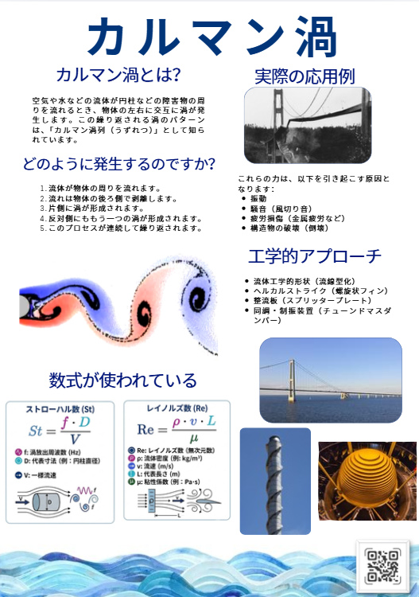

実験写真


カルマン渦とは、流体が円柱などの障害物を通過する際に交互に発生する渦列現象である。 本研究ではレイノルズ装置と円柱モデルを用いてカルマン渦の発生を可視化し、流速との関係について調査した。

本研究では、レイノルズ装置と円柱モデルを用いてカルマン渦を可視化し、流体が障害物を通過する際に発生する渦列現象の特徴を観察・理解することを目的とする。
レイノルズ装置を再現したインタラクティブシミュレーション。
| 流速 | 観察結果 |
|---|---|
| 低流速 | 渦の発生なし |
| 中流速 | カルマン渦を確認 |
| 高流速 | 明確な渦列を形成 |
本研究ではレイノルズ装置と円柱モデルを用いてカルマン渦の発生を観察した。 実験およびシミュレーションを通じて、流体が障害物を通過する際に発生する渦の特徴を理解することができた。 また、カルマン渦は橋梁や煙突、送電線など様々な工学分野で重要な現象であることを確認した。